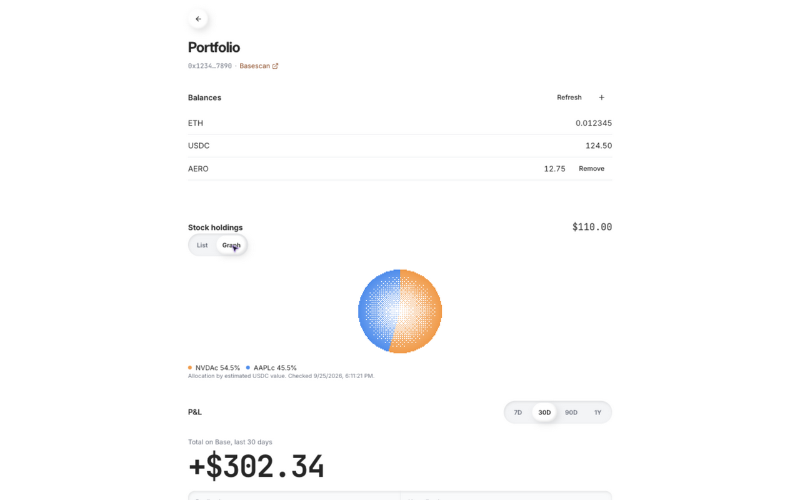
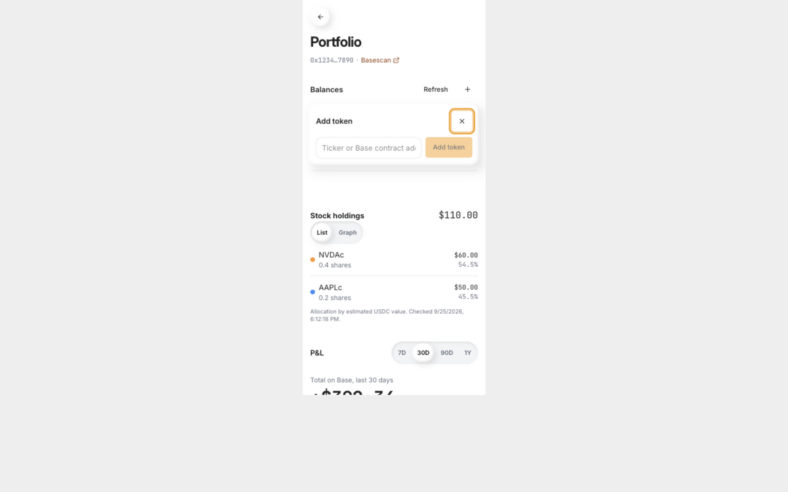

Pecu portfolio
Implemented locally. Production deployment awaits approval.
- ETH and USDC balances appear above P&L in the Agent wallet panel.
- The + beside Balances opens token entry. The input stays hidden otherwise.
- Add Base tokens by supported ticker or contract address. Remove hides custom tokens. The list is saved per wallet in this browser.
- Stock positions switch between List and Graph. Graph shows current allocation by estimated USDC value.
- Profile and Agent share the balance and stock components. Chat stock cards use the same toggle.
Verification
468 backend tests and 70 frontend tests pass. Both TypeScript checks, the Stocks production build, the Worker dry-run build, design checks, and diff secret scan pass. The site documentation build passes.
Browser checks used synthetic balances. Verified the plus popover, ticker addition, duplicate rejection, saved tokens after reload, the stock graph, and the 390px layout. The mobile frame has no horizontal overflow and the popover fits inside it. The recording contains fixture verification and development reloads.
The authenticated read endpoint selects the sender's stored wallet. It does not provision wallets, create chat turns or transaction plans, or sign. No funds moved.
Release
Automatic approval review rejected the production Worker deployment because the request did not explicitly authorize a release. The release order is Pecu Worker, Stocks web app, then site documentation. Production balances and stock loading remain unverified for this change.
The UI applies to desktop and mobile browsers. Other BeeGreat clients have no profile changes; X Chat keeps its text commands. Both inference providers share the read endpoint.
UI verification


Markdown report · Verification recording